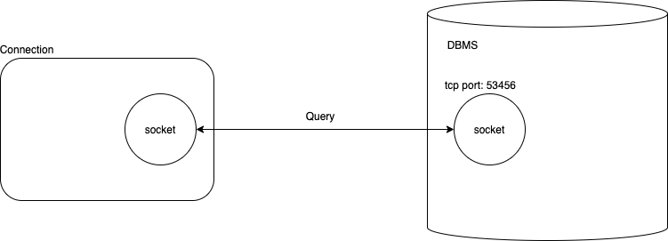
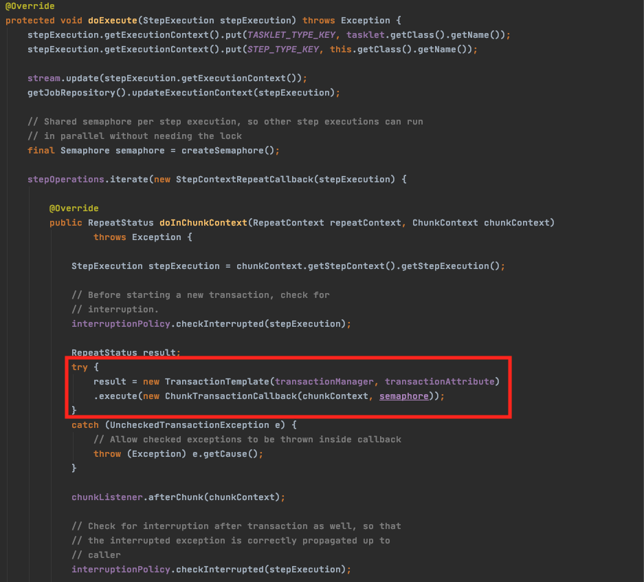
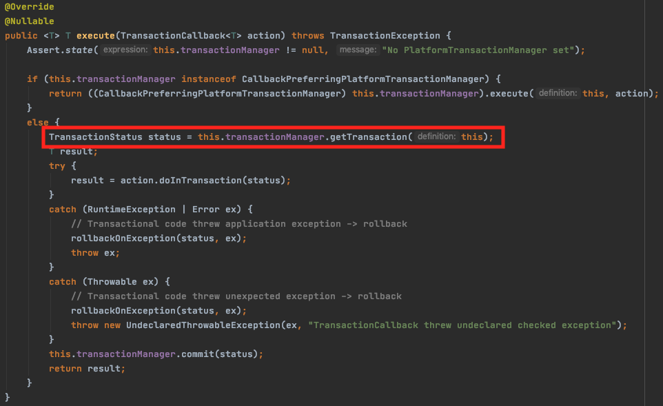
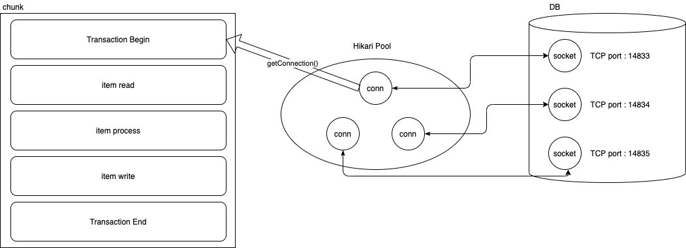
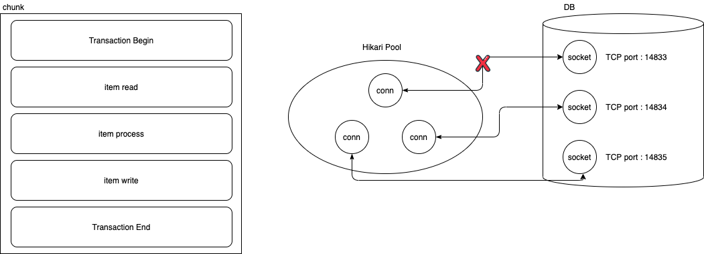
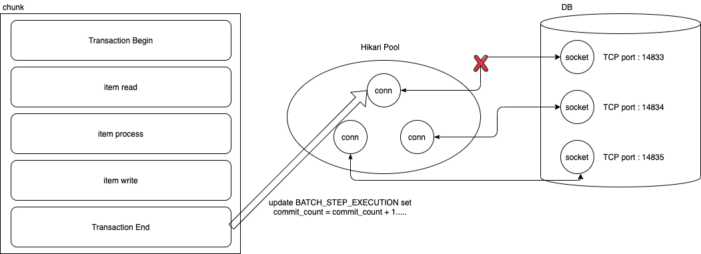

들어가며
Spring Batch 실행 중 아래와 같은 에러 메세지를 확인 하는 경우 이 글에서 설명하는 case일 수 있습니다.
- Caused by: java.io.EOFException: unexpected end of stream, read 0 bytes from 4 (socket was closed by server)
- org.springframework.transaction.TransactionSystemException: Could not roll back JPA transaction; nested exception is org.hibernate.TransactionException: Unable to rollback against JDBC Connection
- Caused by: org.springframework.dao.DataAccessResourceFailureException: PreparedStatementCallback; SQL [UPDATE BATCH_STEP_EXECUTION_CONTEXT SET SHORT_CONTEXT = ?, SERIALIZED_CONTEXT = ? WHERE STEP_EXECUTION_ID = ?]; (conn=376) unexpected end of stream, read 0 bytes from 4 (socket was closed by server); nested exception is java.sql.SQLNonTransientConnectionException: (conn=376) unexpected end of stream, read 0 bytes from 4 (socket was closed by server)
- org.springframework.batch.core.step.FatalStepExecutionException: JobRepository failure forcing rollback
상황
Spring Batch Application을 이용하여 월 단위 데이터 rolling 중 위와 같은 에러메세지를 내며 간헐적으로 배치가 실패하는 case를 발견하였습니다.
배치가 실패하는 원인은 chunk 단위로 작업 시, 작업이 길어지는 경우 배치가 실패하는 현상을 발견하였고 아래 항목에 대한 상관관계가 있음을 발견하였습니다.
- mysql wait_timeout
- chunk 단위의 작업시간
제가 겪은 case는 chunk단위로 DB를 조회하여 데이터를 rolling하는 작업이었는데 마지막 Page에 대해 조회할 때 slow query가 발생하여
chunk의 작업시간이 mysql wait_timeout 시간이 넘어가는 case였습니다.
그렇기 때문에 로그로 확인해봐도 마지막 chunk 작업 시, error가 발생하여 배치작업이 실패하는 것을 확인할 수 있었습니다.
Spring Batch가 하고 있는 일
이 글의 내용을 정확히 이해하기 위해서는 Spring Batch라는 framework에서 내부적으로 하는 일을 알아야 합니다.
Spring Batch는 배치의 실행 결과 / parameter에 대한 meta 정보를 RDB내의 테이블에 내부적으로 저장하고 있습니다.
- BATCH_JOB_EXECUTION
- BATCH_JOB_EXECUTION_CONTEXT
- BATCH_JOB_EXECUTION_PARAM
- BATCH_JOB_EXECUTION_SEQ
- BATCH_JOB_INSTANCE
- BATCH_JOB_SEQ
- BATCH_STEP_EXECUTION
- BATCH_STEP_EXECUTION_CONTEXT
- BATCH_STEP_EXECUTION_SEQ
이 중에서도 이 글에서 집중해서 봐야할 테이블은 BATCH_STEP_EXECUTION 입니다.
이 테이블은 STEP 실행에 대한 상태를 담고 있습니다.
chunk기반 STEP의 경우 chunk 단위 작업이 종료될 때 마다 commit_count, read_count와 같은 상태를 업데이트하고 있습니다.
Hikari CP max life time과 MySQL wait_timeout의 관계
HikariCP Failed to Validate Connection Warning 이야기
위 글에 maxLifeTime과 wait_timeout에 대한 자세한 설명이 있으니 참고 부탁드립니다.
간략하게 설명하면
- HikariCP maxLifeTime: Connection Pool레벨에서 maxLifeTime이 지나도록 idle 상태인 connection 객체를 pool에서 제거합니다.
(GC에 의해 제거 됨) - MySQL wait_timeout: MySQL DBMS에서 wait_timeout 시간이 지나도록 사용하지 않은 Connection에 대해 Connection 연결을 해제합니다.
- 사용하지 않았다는 의미는 Connection을 이용하여 어떠한 Query도 실행하지 않았음을 의미합니다.
JDBC4를 지원하는 드라이버에서는 더 이상 SELECT 1과 같은 validateQuery를 이용하여 Connection을 갱신하지 않습니다.
따라서 클라이언트의 Connection Pool에서 Connection 객체를 취득하였더라도 어떠한 작업도 하지 않는다면 DBMS입장에서는 아무런 Action도 없는 상태와 마찬가지 입니다.
Connection 객체의 내부
JDBC 표준으로 만들어진 Connection 클래스 내부에는 DBMS와 TCP socket을 이용하여 연결을 맺을 수 있도록 되어있습니다.
기본적으로 Connection 객체 한 개당 1 socket 연결이라고 생각하면 쉽습니다.
따라서 Connection 객체가 생길때 마다 MySQL에서 show processlist 명령어를 쳐보면 현재 연결된 session의 정보를 확인할 수 있습니다.
예를들어 Connection Pool 갯수가 10개라면 MySQL에도 똑같이 10개의 session이 맺어진 것을 확인할 수 있습니다.
따라서 이 socket이 실제로 DBMS로 Query를 전송하는 통로 역할을 한다고 볼 수 있습니다.

상황 재현
상황을 재현하기 위한 조건은 아래와 같이 설정하였습니다.
- mysql의 global wait_timeout을 30초로 설정
- set GLOBAL wait_timeout = 30;
- HikariCP의 maxLifeTimeout을 29초로 설정
- spring.datasource.hikari.max-lifetime = 29000
- HikariCP의 maximum-pool-size를 3개로 설정
- spring.datasource.hikari.maximum-pool-size = 3
- chunk 단위의 작업시간을 약 50초 정도로 설정
- sleep 명령어를 통해 50초의 Delay를 설정해보았습니다.
테스트를 위한 간략한 코드
1 |
|
1 | class DelayedItemReader<T>( |
위의 코드에서는 chunk단위가 100개 이며, item 하나를 read하는데 500ms가 소요됩니다.
따라서 chunk size만큼 읽는데 총 50초가 소요됩니다.
Transaction 단위 = chunk 단위
Spring Batch Framework에서는 chunk 기반 Step에 대해 chunk단위로 Transaction을 보장합니다.
TaskletStep 내의 doExecute 메서드 내부를 보면 TransactionTemplate을 기반으로 chunk를 실행합니다.

아래 코드에서 transactionManager.getTransaction을 통해 transaction을 하나 생성하게되고
이 과정에서 HikariPool에서 Connection 객체를 하나 받아옵니다.

그렇다면 왜 Connection으로 인한 오류가 발생할까요?
chunk 시작 시 Transaction 생성으로 인한 Connection 취득

chunk 단위에 대한 작업 시작 시, transaction 생성으로 인해 Hikari Pool에서 connection을 취득합니다.
Hikari Pool 내부에서는 Active Connection으로 인식하며, 이 Connection은 max-lifetime 시간이 지나도 pool에서 제거되지 않습니다.
(이미 사용중이라고 인식하는 Connection이기 때문입니다.)
1 | 2020-08-08 15:09:10.481 DEBUG 81263 --- [ool housekeeper] com.zaxxer.hikari.pool.HikariPool : |
wait_timeout 시간이 지나고 session 제거

- item read 과정에서 50초동안 meta DB Connection을 사용하여 Query를 실행하지 않으므로 DBMS 입장에서는 connection이 유휴상태입니다.
- 따라서 wait_timeout 시간인 30초가 경과하면 DBMS에서 session 연결을 제거합니다.
- 이렇게 되면 Hikari Connection 객체는 유지되지만 내부 socket 연결은 끊어진 상태라고 볼 수 있습니다.
chunk 작업 이후 meta DB update query 실행

- 50초가 지나고 chunk에 대한 작업이 완료되어 meta db에 있는 BATCH_STEP_EXECUTION 테이블에 step 실행 결과를 update 하고자 query를 전송합니다.
- 하지만 Connection 내의 socket을 사용하려고 하는 순간 이미 socket 연결이 끊어졌기 때문에 쿼리를 DBMS에 실행할 수 없게 됩니다.
- 따라서 예외가 발생하게 되며 rollback을 수행하려합니다.
- 하지만 이미 socket이 끊어졌기 때문에 rollback 명령어도 전송하지 못하고 아래의 에러를 내며 batch가 종료됩니다.
1 | org.springframework.batch.core.step.FatalStepExecutionException: JobRepository failure forcing rollback |
마무리
Spring Batch를 사용하다 보면 chunk 단위로 작업을 쪼개서 하는 행위를 많이 하게 됩니다.
위와 같은 에러로 인한 배치 실패를 경험하지 않기 위해서는 chunk의 작업 수행 시간이 wait_timeout 시간보다 반드시 적게 걸려야 한다는 점을 유의해야할 합니다.
chunk의 작업 시간에 영향을 미치는 것은 아래와 같습니다.
- read 지연
- process 지연
- write 지연
특히 read 시, slow query와 같은 이슈가 발생할 가능성이 있습니다. 저 또한 그랬고요
위의 예시가 많은 분들의 도움이 되길 바랍니다.
테스트 한 코드는 아래 repository를 참고 부탁드립니다.
https://github.com/jaehun2841/spring-batch-connection-close-issue